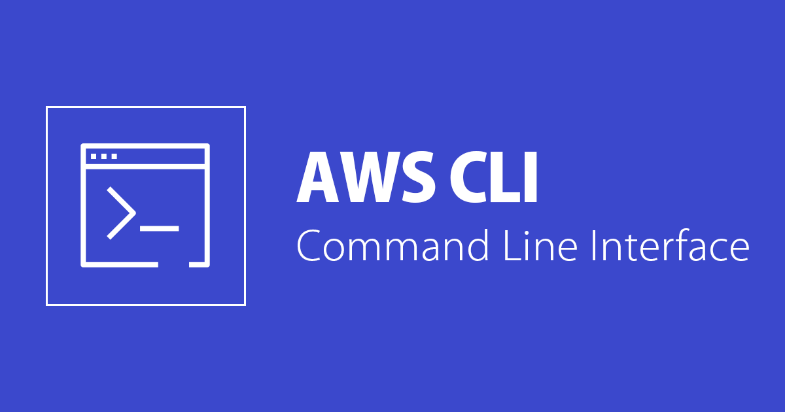

IAW - Práctica 13.1 AWS CLI (Command Line Interface)
 AWS CLI (Command Line Interface) es una herramienta de línea de comandos que permite a los usuarios interactuar con los servicios de AWS desde la terminal de su ordenador. Con AWS CLI, los usuarios pueden acceder y administrar una amplia variedad de recursos de AWS, incluidos los servicios de cómputo, almacenamiento, bases de datos, redes, seguridad y mucho más. La AWS CLI es compatible con Windows, Linux y macOS, y se puede instalar fácilmente a través de un gestor de paquetes como pip. Además, se puede utilizar en scripts para automatizar tareas en AWS y en aplicaciones que se ejecutan en AWS.
1.2 Instalación de AWS CLI
- Linux
- macOS
- Windows
- Docker
Se recomienda consultar la documentación oficial para obtener los detalles de la instalación para cada una de las opciones disponibles.
1.2.1 Instalación en Linux
Para realizar la instalación de AWS CLI en un sistema operativo Linux sobre una arquitectura x86 de 64 bits, tenemos que ejcutar los siguientes comandos.
Paso 1. Descargamos un archivo .zip con la aplicación AWS CLI.
curl "https://awscli.amazonaws.com/awscli-exe-linux-x86_64.zip" -o "awscliv2.zip"
Paso 2. Descomprimimos el archivo que acabamos de descargar.
unzip awscliv2.zip
Paso 3. Ejectuamos el script de instalación.
sudo ./aws/install
Paso 4. Comprobamos que la instalación se ha realizado de forma correcta.
aws --version
1.2.2 Instalación en macOS
- Instalación de AWS CLI desde la interfaz de usuario.
- Instalación de AWS CLI desde la línea de comandos.
1.2.3 Instalación en Windows
1.3 Configuración de AWS CLI
1.3.1 Opción 1. Con el comando aws configure
Para configurar AWS CLI ejecutaremos el siguiente comando.
aws configure
Este comando preguntará por los siguientes datos:
AWS Access Key ID [None]:
AWS Secret Access Key [None]:
Default region name [None]:
Default output format [None]:
Con los que creará un archivo de texto llamado credentials dentro del directorio home del usuario.
* En Linux se encuentra en la ruta ~/.aws/credentials.
* En Windows estará en la ruta: C:\Users\usuario\.aws\credentials.
1.3.1 Opción 2. Copiando el contenido del archivo credentials de AWS Academy.
Si queremos utilizar las credenciales de AWS Academy solo tenemos que copiar en el archivo ~/.aws/credentials los datos que nos aparecen en el apartado AWS Details -> Cloud Access -> AWS CLI, dentro del Learner Lab de AWS Academy.
Ejemplo de un archivo credentials.
[default]
aws_access_key_id=BSICYBW38QHVAVV7P365
aws_secret_access_key=DE/CB2FGCx8EV34x0EtuZfJg39E7hapZ9suhXBzF
aws_session_token=FwoGZXIvYXdzECkaDAGFN5okYCHateFXISK9AYwT4gghzz5hIr6TZs9X8pQaOYPZvTCNSrLtJoaw/fEwz9...XBzH
Para configurar la región de AWS a utilizar y el formato de salida se puede ejecutar el comando aws configure de nuevo o abrir el archivo config dentro del directorio .aws y agregar los siguientes datos:
- Región:
us-east-1 - Formato de salida:
json
Ejemplo de un archivo config.
[default]
region = us-east-1
output = json
1.4 Ejercicios
Estructura
├── Ejercicio01
│ ├── scripts
│ │ └── create_sg.sh
│ └── variables
│ └── vars.sh
├── Ejercicio02
│ ├── scripts
│ │ └── run_instance.sh
│ └── variables
│ └── vars.sh
├── Ejercicio03
│ ├── scripts
│ │ ├── eliminar_practica9.sh
│ │ └── montar_practica9.sh
│ └── variables
│ └── vars.sh
├── Ejercicio04
│ ├── scripts
│ │ ├── 00-terminate_all_instances.sh
│ │ ├── 01-delete_all_security_groups.sh
│ │ ├── 02-delete_all_elastic_ips.sh
│ │ ├── 03-create_security_groups.sh
│ │ ├── 04-create_instances.sh
│ │ ├── 05-create_elastic_ip.sh
│ │ └── user-data.sh
│ └── variables
│ └── vars.sh
├── Ejercicio05
│ └── scripts
│ └── mostrar_info.sh
├── img
│ └── logo.png
└── README.md
1.4.1 Ejercicio 1
- Crea un grupo de seguridad para las máquinas del Backend con el nombre backend-sg.
- Añada las siguientes reglas al grupo de seguridad:
- Acceso SSH (puerto 22/TCP) desde cualquier dirección IP.
- Acceso al puerto 3306/TCP desde cualquier dirección IP.
Solución:
#!/bin/bash
set -x
# ----------------------------------------------------------------------
# Variables de Configuración
# ----------------------------------------------------------------------
source "$(dirname "${BASH_SOURCE[0]}")/../variables/vars.sh"
# Deshabilitamos la paginación de la salida de los comandos de AWS CLI
# Referencia: https://docs.aws.amazon.com/es_es/cli/latest/userguide/cliv2-migration.html#cliv2-migration-output-pager
export AWS_PAGER=""
# Creamos el grupo de seguridad: backend-sg
aws ec2 create-security-group \
--group-name $GROUP_NAME \
--description "Grupo de Seguridad $GROUP_NAME para maquinas Backend"
# Creamos una regla de accesso SSH desde cualquier IP
aws ec2 authorize-security-group-ingress \
--group-name $GROUP_NAME \
--protocol $PROTOCOL_01 \
--port $PORT_01 \
--cidr $NETWORK_01
# Creamos una regla de accesso para el puerto 3306 desde cualquier IP
aws ec2 authorize-security-group-ingress \
--group-name $GROUP_NAME \
--protocol $PROTOCOL_01 \
--port $PORT_02 \
--cidr $NETWORK_01
1.4.2 Ejercicio 2
-
Crea una instancia EC2 para la máquina del Backend con las siguientes características.
- Identificador de la AMI: ami-08e637cea2f053dfa. Esta AMI se corresponde con la imagen Red Hat Enterprise Linux 9 (HVM).
- Número de instancias: 1
- Tipo de instancia: t2.micro
- Clave privada: vockey
- Grupo de seguridad: * backend-sg
- Nombre de la instancia: backend
Solución:
#!/bin/bash
set -x
# ----------------------------------------------------------------------
# Variables de Configuración
# ----------------------------------------------------------------------
source "$(dirname "${BASH_SOURCE[0]}")/../variables/vars.sh"
# Deshabilitamos la paginación de la salida de los comandos de AWS CLI
# Referencia: https://docs.aws.amazon.com/es_es/cli/latest/userguide/cliv2-migration.html#cliv2-migration-output-pager
export AWS_PAGER=""
# Creamos una intancia EC2 con el Identificador AMI correspondiente a Red Hat Enterprise Linux 9.
aws ec2 run-instances \
--image-id $AMI_ID \
--instance-type $INSTANCE_TYPE \
--key-name $KEY_NAME \
--security-group-ids $SECURITY_GROUP_BACKEND \
--count $COUNT \
--tag-specifications "ResourceType=instance,Tags=[{Key=Name,Value=$INSTANCE_NAME_BACKEND}]"
1.4.3 Ejercicio 3
- Crear un script para crear la infraestructura de la práctica 9.
- Crear un script para eliminar la infraestructura de la práctica 9.
Solución para montar la infraestructura:
#!/bin/bash
set -x
# ----------------------------------------------------------------------
# Variables de Configuración
# ----------------------------------------------------------------------
source "$(dirname "${BASH_SOURCE[0]}")/../variables/vars.sh"
# Deshabilitamos la paginación de la salida de los comandos de AWS CLI
# Referencia: https://docs.aws.amazon.com/es_es/cli/latest/userguide/cliv2-migration.html#cliv2-migration-output-pager
export AWS_PAGER=""
##################################################################################################################################
# Creamos el grupo de seguridad: FrontEndSecurityGroup
aws ec2 create-security-group \
--group-name $FRONTEND_GROUP_NAME \
--description "Grupo de Seguridad $FRONTEND_GROUP_NAME para maquinas FrontEnd."
# Creamos una regla de accesso SSH desde cualquier IP
aws ec2 authorize-security-group-ingress \
--group-name $FRONTEND_GROUP_NAME \
--protocol $PROTOCOL_01 \
--port $PORT_01_FRONTEND \
--cidr $NETWORK_01
# Creamos una regla de accesso para el puerto HTTP
aws ec2 authorize-security-group-ingress \
--group-name $FRONTEND_GROUP_NAME \
--protocol $PROTOCOL_01 \
--port $PORT_02_FRONTEND \
--cidr $NETWORK_01
##################################################################################################################################
# Creamos el grupo de seguridad: BackEndSecurityGroup
aws ec2 create-security-group \
--group-name $BACKEND_GROUP_NAME \
--description "Grupo de Seguridad $BACKEND_GROUP_NAME para maquinas BackEnd."
# Creamos una regla de accesso SSH desde cualquier IP
aws ec2 authorize-security-group-ingress \
--group-name $BACKEND_GROUP_NAME \
--protocol $PROTOCOL_01 \
--port $PORT_01_BACKEND \
--cidr $NETWORK_01
# Creamos una regla de accesso para el puerto 3306 desde cualquier IP
aws ec2 authorize-security-group-ingress \
--group-name $BACKEND_GROUP_NAME \
--protocol $PROTOCOL_01 \
--port $PORT_02_BACKEND \
--cidr $NETWORK_01
##################################################################################################################################
# Creamos el grupo de seguridad: NFS
aws ec2 create-security-group \
--group-name $NFS_GROUP_NAME \
--description "Grupo de Seguridad $NFS_GROUP_NAME para maquinas servidor NFS."
# Creamos una regla de accesso SSH
aws ec2 authorize-security-group-ingress \
--group-name $NFS_GROUP_NAME \
--protocol $PROTOCOL_01 \
--port $PORT_01_NFS \
--cidr $NETWORK_01
# Creamos una regla de accesso para MySQL
aws ec2 authorize-security-group-ingress \
--group-name $NFS_GROUP_NAME \
--protocol $PROTOCOL_01 \
--port $PORT_02_NFS \
--cidr $NETWORK_01
##################################################################################################################################
# Creamos el grupo de seguridad: BALANCEADOR
aws ec2 create-security-group \
--group-name $LOADBALANCER_GROUP_NAME \
--description "Grupo de Seguridad $LOADBALANCER_GROUP_NAME para maquinas Balanceador de carga."
# Creamos una regla de accesso SSH
aws ec2 authorize-security-group-ingress \
--group-name $LOADBALANCER_GROUP_NAME \
--protocol $PROTOCOL_01 \
--port $PORT_01_LOAD_BALANCER \
--cidr $NETWORK_01
# Creamos una regla de accesso HTTP
aws ec2 authorize-security-group-ingress \
--group-name $LOADBALANCER_GROUP_NAME \
--protocol $PROTOCOL_01 \
--port $PORT_02_LOAD_BALANCER \
--cidr $NETWORK_01
# Creamos una regla de accesso HTTPS
aws ec2 authorize-security-group-ingress \
--group-name $LOADBALANCER_GROUP_NAME \
--protocol $PROTOCOL_01 \
--port $PORT_03_LOAD_BALANCER \
--cidr $NETWORK_01
###################################### Instancias ##########################################################
# Creamos una intancia EC2 Balanceador de carga.
aws ec2 run-instances \
--image-id $AMI_ID \
--instance-type $INSTANCE_TYPE02 \
--key-name $KEY_NAME \
--security-group-ids $LOADBALANCER_GROUP_NAME \
--count $COUNT \
--tag-specifications "ResourceType=instance,Tags=[{Key=Name,Value=$INSTANCE_NAME_LOADBALANCER}]"
##################################################################################################################################
# Creamos una intancia EC2 FrontEnd01.
aws ec2 run-instances \
--image-id $AMI_ID \
--instance-type $INSTANCE_TYPE01 \
--key-name $KEY_NAME \
--security-group-ids $FRONTEND_GROUP_NAME \
--count $COUNT \
--tag-specifications "ResourceType=instance,Tags=[{Key=Name,Value=$INSTANCE_NAME_FRONTEND01}]"
##################################################################################################################################
# Creamos una intancia EC2 FrontEnd02.
aws ec2 run-instances \
--image-id $AMI_ID \
--instance-type $INSTANCE_TYPE01 \
--key-name $KEY_NAME \
--security-group-ids $FRONTEND_GROUP_NAME \
--count $COUNT \
--tag-specifications "ResourceType=instance,Tags=[{Key=Name,Value=$INSTANCE_NAME_FRONTEND02}]"
##################################################################################################################################
# Creamos una intancia EC2 BackEnd.
aws ec2 run-instances \
--image-id $AMI_ID \
--instance-type $INSTANCE_TYPE02 \
--key-name $KEY_NAME \
--security-group-ids $BACKEND_GROUP_NAME \
--count $COUNT \
--tag-specifications "ResourceType=instance,Tags=[{Key=Name,Value=$INSTANCE_NAME_BACKEND}]"
##################################################################################################################################
# Creamos una intancia EC2 Servidor NFS.
aws ec2 run-instances \
--image-id $AMI_ID \
--instance-type $INSTANCE_TYPE02 \
--key-name $KEY_NAME \
--security-group-ids $NFS_GROUP_NAME \
--count $COUNT \
--tag-specifications "ResourceType=instance,Tags=[{Key=Name,Value=$INSTANCE_NAME_NFS}]"
##################################################################################################################################
sleep 15
# Obtenemos el Id de la instancia a partir de su nombre
INSTANCE_ID=$(aws ec2 describe-instances \
--filters "Name=tag:Name,Values=$INSTANCE_NAME_LOADBALANCER" \
"Name=instance-state-name,Values=running" \
--query "Reservations[*].Instances[*].InstanceId" \
--output text)
# Creamos una IP elástica
ELASTIC_IP=$(aws ec2 allocate-address --query PublicIp --output text)
# Asociamos la IP elástica a la instancia del balanceador
aws ec2 associate-address --instance-id $INSTANCE_ID --public-ip $ELASTIC_IP
Solución para eliminar la infraestructura:
#!/bin/bash
set -x
# ----------------------------------------------------------------------
# Variables de Configuración
# ----------------------------------------------------------------------
source "$(dirname "${BASH_SOURCE[0]}")/../variables/vars.sh"
# Deshabilitamos la paginación de la salida de los comandos de AWS CLI
# Referencia: https://docs.aws.amazon.com/es_es/cli/latest/userguide/cliv2-migration.html#cliv2-migration-output-pager
export AWS_PAGER=""
# Eliminar instancias en ejecución con los siguientes nombres
names=("$INSTANCE_NAME_FRONTEND01" "$INSTANCE_NAME_FRONTEND02" "$INSTANCE_NAME_BACKEND" "$INSTANCE_NAME_NFS" "$INSTANCE_NAME_LOADBALANCER")
for name in "${names[@]}"; do
instance_id=$(aws ec2 describe-instances \
--filters "Name=tag:Name,Values=$name" "Name=instance-state-name,Values=running" \
--query 'Reservations[*].Instances[*].[InstanceId]' --output text)
if [ -z "$instance_id" ]; then
echo "No se encontraron instancias en ejecución con el nombre $name"
continue
fi
# Obtiene el ID de la IP elástica asociada a la instancia
EIP_ID=$(aws ec2 describe-addresses --filters "Name=instance-id,Values=$instance_id" --query "Addresses[].AllocationId" --output text)
# Elimina la IP elástica
aws ec2 release-address --allocation-id $EIP_ID
echo "Eliminando instancia en ejecución con el nombre $name y ID $instance_id..."
aws ec2 terminate-instances --instance-ids $instance_id
done
# Esperar 25 segundos
echo "Esperando 25 segundos..."
sleep 25
# Eliminar grupos de seguridad
security_groups=($FRONTEND_GROUP_NAME $BACKEND_GROUP_NAME $NFS_GROUP_NAME $LOADBALANCER_GROUP_NAME)
for security_group in "${security_groups[@]}"; do
group_id=$(aws ec2 describe-security-groups \
--filters "Name=group-name,Values=$security_group" \
--query 'SecurityGroups[*].[GroupId]' --output text)
if [ -z "$group_id" ]; then
echo "No se encontró ningún grupo de seguridad con el nombre $security_group"
continue
fi
echo "Eliminando grupo de seguridad con el nombre $security_group y ID $group_id..."
aws ec2 delete-security-group --group-id $group_id
done
1.4.4 Ejercicio 4
Modifique los scripts del repositorio de ejemplo:
- https://github.com/josejuansanchez/practica-aws-cli
para que utilicen la siguiente AMI.
- Nombre de la AMI: Ubuntu Server 22.04 LTS (HVM).
- Identificador de la AMI: ami-06878d265978313ca.
También tendrá que modificar los scripts para que se ejecute el siguiente comando en las instancias durante el inicio.
$ sudo apt update && sudo apt upgrade -y
Solución:
Añadir la siguiente línea a los scripts del repositorio de ejemplo:
--user-data file://user-data.sh
Donde user-data.sh es un archivo de script para shell con el siguiente código:
#!/bin/bash
set -x
# Actualización de repositorios.
apt update && sudo apt upgrade -y
1.4.5 Ejercicio 5
Escriba un script de bash que muestre el nombre de todas instancias EC2 que tiene en ejecución junto a su dirección IP pública.
Solución:
#!/bin/bash
# Obtener las IDs de todas las instancias EC2 en ejecución
instance_ids=$(aws ec2 describe-instances --filters "Name=instance-state-name,Values=running" --query "Reservations[*].Instances[*].InstanceId" --output text)
# Para cada ID de instancia, obtener su nombre y dirección IP pública
for instance_id in $instance_ids
do
name=$(aws ec2 describe-tags --filters "Name=resource-id,Values=$instance_id" "Name=key,Values=Name" --query "Tags[0].Value" --output text)
public_ip=$(aws ec2 describe-instances --instance-ids $instance_id --query "Reservations[0].Instances[0].PublicIpAddress" --output text)
# Imprimir el nombre y la dirección IP pública de la instancia
echo "$name: $public_ip"
done